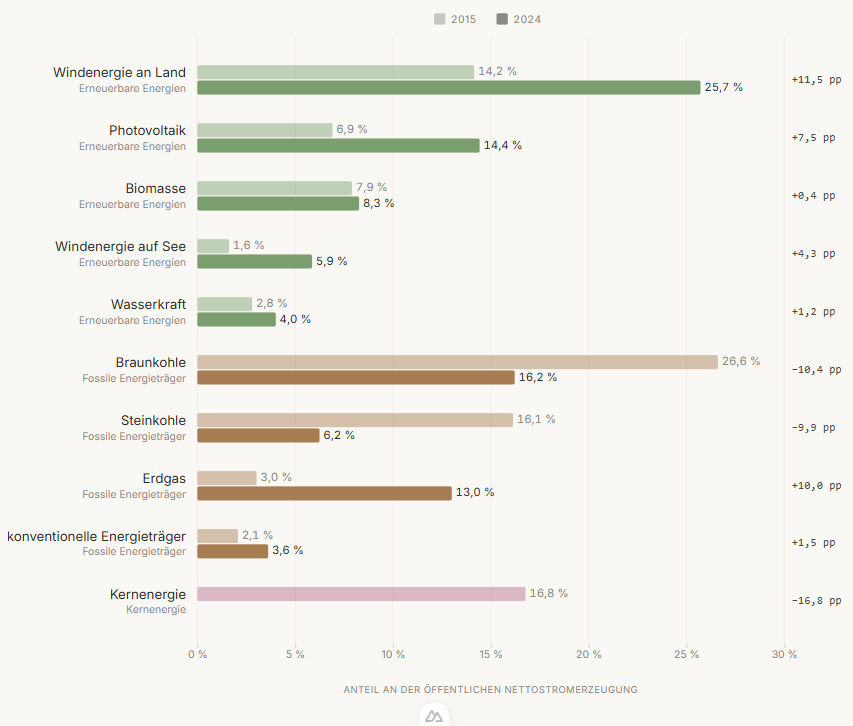
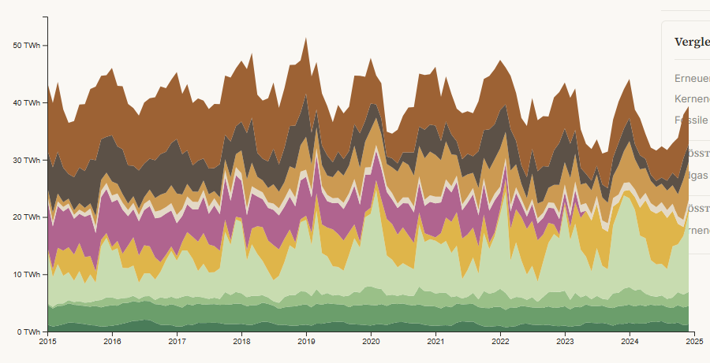
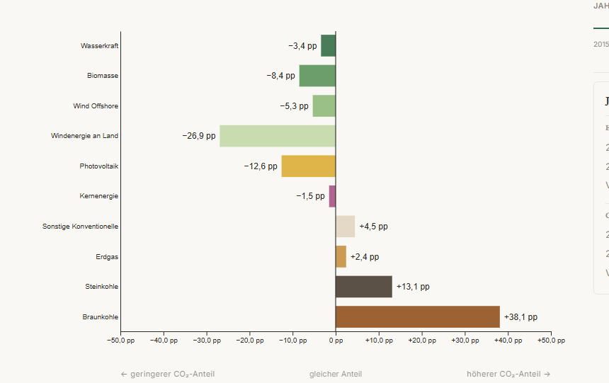

Strom und Klimaneutralität – der deutsche Strommix zwischen 2015 und 2024
Eine interaktive Visualisierung von Erzeugung und CO₂-Emissionen
In diesem Projekt zeige ich, wie sich der deutsche Strommix zwischen 2015 und 2024 verändert hat und welche Energieträger dabei überproportional viel zu den CO₂-Emissionen der Stromerzeugung beitragen.
Worum es geht
Der Sommer 2026 macht es schwer zu übersehen, dass die Klimakrise Gegenwart ist. In Deutschland liegen Hitze und Waldbrandgefahr auf einem hohen Niveau, im Südwesten Frankreichs haben Brände Ende Juli über 40.000 Hektar zerstört und mehr als 200.000 Menschen mussten in Sicherheit gebracht werden [10]. Für mich sind das Entwicklungen, die die Dringlichkeit von Klimaneutralität sehr deutlich machen: Wenn die Erwärmung begrenzt werden soll, müssen die Emissionen sinken, dabei ist die Energieversorgung einer der größten Hebel.
Die Veränderungen sind inzwischen im Alltag sichtbar. Auf immer mehr Dächern liegen Solaranlagen, neue Windparks entstehen und die Windräder werden größer. Gleichzeitig bekomme ich gerade in der Harzregion mit, wie umstritten dieser Ausbau ist. Auch die Debatte um das Heizungsgesetz hat gezeigt, wie emotional über Maßnahmen zur Klimaneutralität diskutiert wird.
Ich beschäftige mich privat viel mit dem Thema, unter anderem durch den Podcast von Claudia Kemfert. Dort geht es regelmäßig um die Energiewende, den Strommarkt und die Frage, wie Deutschland seine Emissionen senken kann. Für mein Projekt habe ich einen Teil davon genauer betrachtet und mir angeschaut, wie sich der deutsche Strommix in den vergangenen Jahren verändert hat. Dabei geht es nicht nur darum, wie viel Strom aus Wind, Sonne, Kohle oder Gas kommt. Interessant ist auch, wie stark die einzelnen Energieträger zu den CO₂-Emissionen beitragen und wie sich dieses Verhältnis über die Jahre verändert. Genau diesen Zusammenhang wollte ich in meiner Anwendung sichtbar machen.
Meine Anwendung „Die Klimabilanz des deutschen Stroms“ versucht, genau diese Diskrepanz sichtbar zu machen. Sie zeigt die Entwicklung des deutschen Strommix zwischen 2015 und 2024 und stellt die Stromerzeugung den direkten CO₂-Emissionen der einzelnen Energieträger gegenüber. Datengrundlage sind die stündlichen Erzeugungsdaten der Bundesnetzagentur (SMARD) sowie Emissionsfaktoren des Umweltbundesamts [1], [3].
Zielsetzung und Leitfrage
Aus der Einleitung ergibt sich die zentrale Frage des Projekts:
Wie hat sich der deutsche Strommix zwischen 2015 und 2024 verändert und welche Energieträger tragen im Verhältnis zu ihrem Anteil an der Stromerzeugung besonders stark zu den direkten CO₂-Emissionen bei?
Diese Frage habe ich in vier Teilfragen unterteilt, die zugleich die drei Bereiche meiner Anwendung strukturieren:
- Wie haben sich die Erzeugungsanteile der einzelnen Energieträger zwischen 2015 und 2024 verändert?
- Wie entwickelt sich die Stromerzeugung im monatlichen Verlauf und lassen sich dabei auffällige Veränderungen erkennen?
- Wie unterscheiden sich Erzeugungsanteil und Anteil an den direkten CO₂-Emissionen bei den einzelnen Energieträgern?
- Wie hat sich die CO₂-Intensität des deutschen Stroms insgesamt verändert?
Diese Fragen bilden die Struktur der Anwendung. Die Startseite zeigt den direkten Vergleich zwischen 2015 und 2024. Im Bereich „Entwicklung“ lässt sich anschließend die zeitliche Veränderung betrachten. Der „CO₂-Vergleich“ stellt schließlich die Stromerzeugung den direkten CO₂-Emissionen gegenüber.
Umsetzung
Für die Umsetzung habe ich die Anwendung in drei Bereiche gegliedert, die aufeinander aufbauen. Jeder Bereich betrachtet dieselben Stromdaten aus einer anderen Perspektive. So beginnt die Anwendung mit einem übersichtlichen Vergleich und führt danach Schritt für Schritt zu den zeitlichen Entwicklungen und zum CO₂-Vergleich.
Balkenvergleich 2015 vs. 2024

Die Startseite gibt einen schnellen Überblick über die Veränderungen zwischen 2015 und 2024. Für jeden Energieträger werden die Werte beider Jahre direkt gegenübergestellt. So lässt sich erkennen, welche Energieträger an Bedeutung gewonnen haben und welche zurückgegangen sind.
Gestapeltes Flächendiagramm zum Strommix

Im Bereich „Entwicklung“ zeigt ein gestapeltes Flächendiagramm die monatlichen Werte der zehn dargestellten Energieträger. Dabei kann zwischen absoluten Werten in Terawattstunden (TWh) und den Anteilen an der Gesamterzeugung gewechselt werden. Historische Ereignisse wie der Kohleausstiegsbeschluss oder der Atomausstieg helfen dabei, auffällige Veränderungen zeitlich einzuordnen.
Abweichungsdiagramm zum CO₂-Vergleich

Der „CO₂-Vergleich“ stellt für ein ausgewähltes Jahr den Erzeugungsanteil eines Energieträgers seinem Anteil an den direkten CO₂-Emissionen gegenüber. Die Differenz wird in Prozentpunkten dargestellt. Ein Balken nach rechts bedeutet, dass ein Energieträger im Verhältnis zu seinem Erzeugungsanteil überproportional viele Emissionen verursacht. Ein Balken nach links zeigt das Gegenteil.
Bedienung
Mir war wichtig, dass die Anwendung ohne lange Einarbeitung verständlich ist. Über die Navigation kann man zwischen der Startseite, dem Bereich „Entwicklung“ und dem „CO₂-Vergleich“ wechseln.
Folgende Möglichkeiten stehen bei der Bedienung zur Verfügung:
- Im Strommix-Diagramm kann zwischen absoluten Werten in TWh und prozentualen Anteilen gewechselt werden.
- Beim Bewegen der Maus über die Diagramme zeigt ein Tooltip die genauen Werte für den jeweiligen Zeitpunkt oder Energieträger.
- Über die Legende lässt sich ein einzelner Energieträger auswählen und im Diagramm hervorheben.
- Historische Ereignisse können angeklickt werden. Die zugehörigen Energieträger werden dann markiert und in der Seitenleiste genauer erklärt.
- Im CO₂-Vergleich wird das gewünschte Jahr mit einem Schieberegler ausgewählt.
- Die Energieträger lassen sich dort alphabetisch oder nach der Größe ihrer Abweichung sortieren.
- Ein ausgewählter Energieträger kann durch einen erneuten Klick oder durch einen Klick auf den freien Diagrammbereich wieder abgewählt werden.
Auf diese Weise kann man die Anwendung zunächst frei erkunden und bei Interesse immer weiter ins Detail gehen. Die Diagramme geben einen Überblick, während Tooltips, Markierungen und die Seitenleiste zusätzliche Informationen liefern.
Daten und Methodik
Die Grundlage der Anwendung sind stündliche Erzeugungsdaten von SMARD (Strommarktdaten der Bundesnetzagentur) für den Zeitraum 2015 bis 2024. SMARD veröffentlicht die realisierte Stromerzeugung in Deutschland aufgeschlüsselt nach Energieträger.
Für die CO₂-Berechnung verwende ich Emissionsfaktoren des Umweltbundesamts, die angeben, wie viel CO₂ pro erzeugter Kilowattstunde bei einem bestimmten Energieträger im Schnitt anfällt. Multipliziert mit der erzeugten Strommenge ergibt sich daraus eine CO₂-Menge je Energieträger und Zeitraum.
Die stündlichen Rohdaten liegen in koordinierter Weltzeit (UTC) vor und werden für die Auswertung in Berliner Lokalzeit umgerechnet, damit Tages- und Monatsgrenzen zur tatsächlichen Ortszeit passen.
SMARD unterscheidet mehr Energieträger-Kategorien, als in der Anwendung einzeln dargestellt werden. Ich zeige zehn Energieträger, nicht alle SMARD-Kategorien einzeln. Deshalb ergeben die dargestellten Anteile in Summe nicht ganz 100 %, sondern liegen knapp darunter.
Technische Grundlagen
Die Anwendung ist mit Vue und Nuxt sowie TypeScript umgesetzt, die Diagramme selbst zeichne ich mit D3. Als Laufzeitumgebung während der Entwicklung habe ich Bun verwendet.
Die Rohdaten liegen als JSON-Dateien im Projekt und werden beim ersten Laden der Seite eingelesen. Danach läuft die Anwendung ohne weitere Internetverbindung.
Einschränkungen
Ein paar Punkte, die man beim Betrachten der Anwendung im Hinterkopf behalten sollte:
- Nicht jede von SMARD erfasste Erzeugungskategorie wird einzeln dargestellt – einige kleinere oder seltener genutzte Kategorien fehlen in der Detailansicht.
- Die verwendeten Emissionsfaktoren sind Durchschnittswerte je Energieträger und keine Messwerte einzelner Kraftwerke. Reale Anlagen können davon abweichen.
- Berücksichtigt werden nur die direkten Emissionen der Stromerzeugung, nicht die vorgelagerten Emissionsketten (z. B. Abbau, Transport oder Bau der Anlagen).
- Import- und Exportströme mit dem Ausland fließen nicht gesondert in die Darstellung ein.